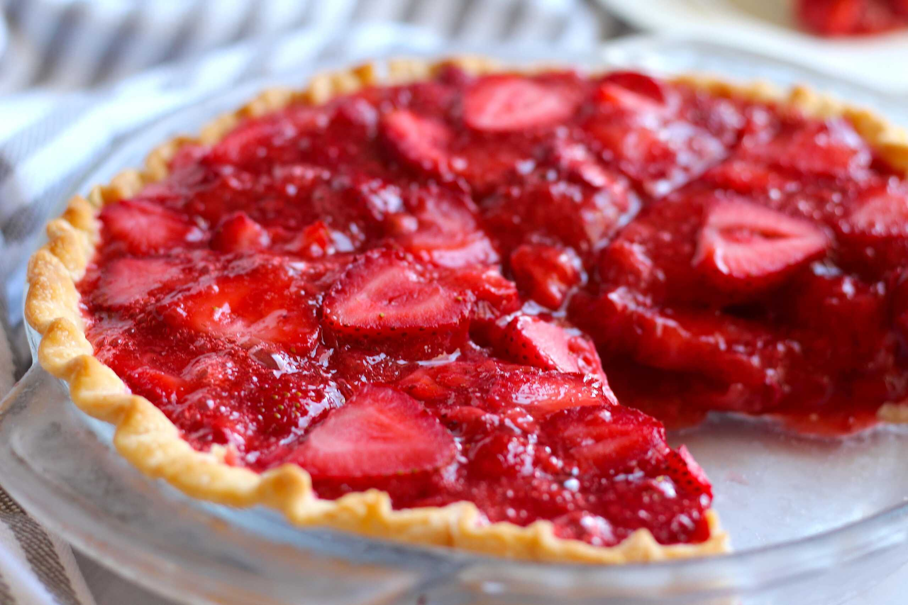

Strawberry pie

Description
Strawberry Pie is a delightful dessert that brings together fresh, juicy strawberries and a crisp, golden crust.
The natural sweetness of the strawberries is enhanced with a light, sweet glaze, making each bite refreshing and satisfying.
Perfect for warm days or special gatherings, this pie offers a delicious balance of texture and flavor, with the perfect combination of fruitiness and a buttery crust.
Ingredients
- 1 cup sugar
- 1 cup water
- 6 teaspoons cornstarch
- 3 ounces strawberry Jell-O gelatin dessert
- 1-2 pint washed and hulled strawberry
- 1 9in.baked pastry shell, cooled
Steps
- Bring sugar, water and cornstarch to a boil over medium high heat.
- Add Jell-O, stir until dissolved
- Cool and then add strawberries
- Refrigerate about 45 minutes or until it starts to congeal.
- Put in pie shell and cool completely
- Top with whipped cream or ice cream to serve
Home